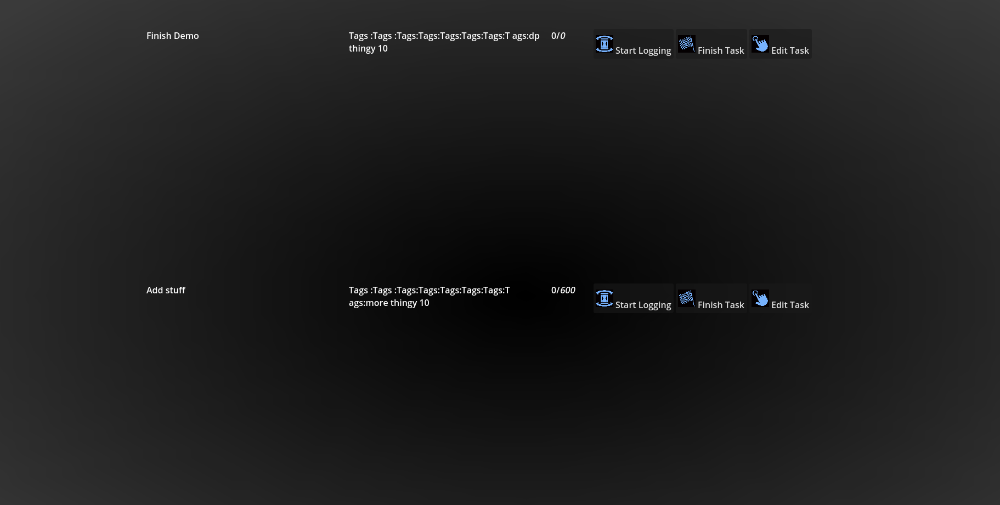

Day 1: Aug 22nd 2025
The first day has been super productive. I started off with a custom theme (inspired by this person css zen garden ) and spent some time tweaking it. Visual design/organized design is always something I struggled with, and now after some years of doing this, I think I can build a pretty decent-ish ui.
I'm going for a design inspired by the 2000s (y2k), with gradients and desaturated colors. When I beauty this up, it'll look very cool.
I like how the ps3 menu is so sparkly, with transparency and other good looking particles. Once I add shaders and animation effects, this will look cool. 
Future work:
I want to really dial in on adding tasks and creating a persistent database. It would be easiest to just create an sqlite database and read/load from that.... But I'm not so sure. I can always just use in built config files for consistency - that should be pretty device-agnostic.
Tags are also a bit harder than anticipated. Just like with discussdock, I think I want to have a master list of tags. Each tag will use bbcode for an associated color (not quite sure how im accomplishing this).
Time is also something much more difficult than I thought. Go has a lot of easy ways of working with time... GDscript - not so much. I think I want to use unix time for everything and convert when necessary.... but I'm not sure about the long term scalability of this solution. I will eventually add hour-by-hour day planners, and converting between yyyy-mm-dd:hr-m-s-ms and unix time format will 100% be annoying. This is a system architecture question.